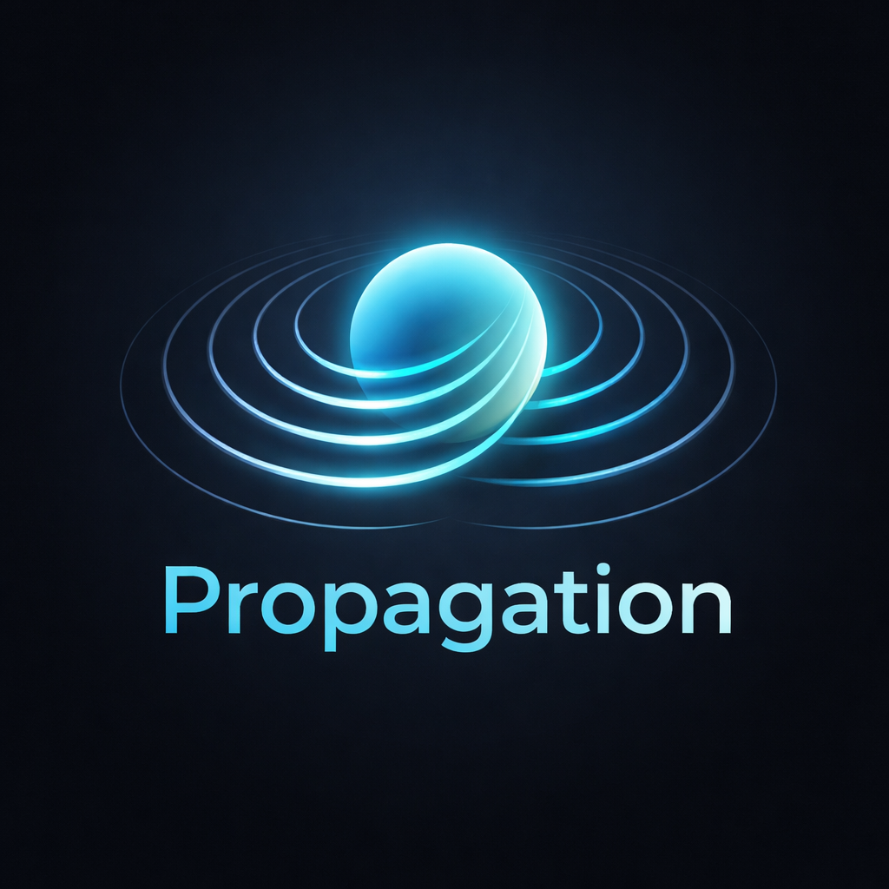
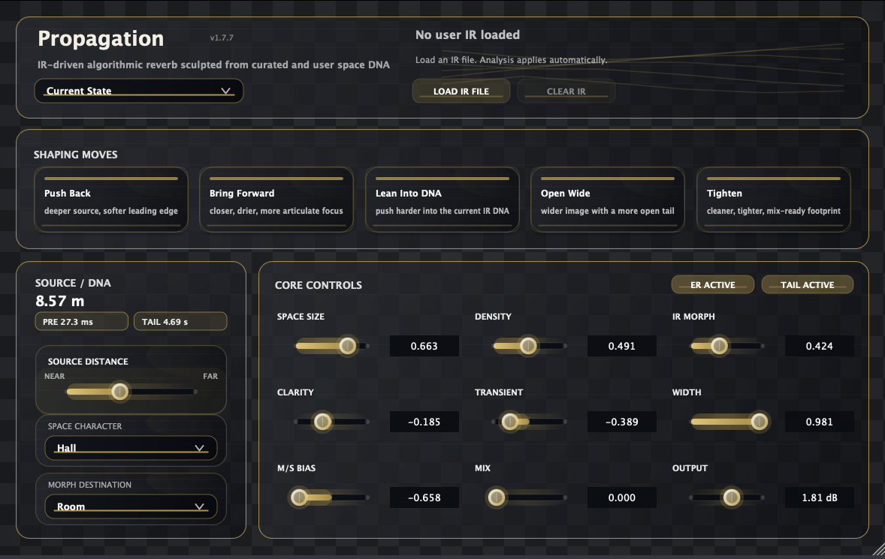

Released — Version 1.4.0.
Free IR-Inspired Algorithmic Reverb
Propagation is a free IR-inspired algorithmic reverb that turns captured spaces into editable size, density, width, clarity, and motion controls. It uses impulse-response analysis as a starting point, then lets you keep shaping the space inside a mix instead of staying trapped inside one fixed convolution snapshot.
Propagation analyzes a captured space, then turns it into a playable algorithmic reverb.
If you prefer a simpler mental model, think of it like this: IRs provide the spatial fingerprint, while Propagation gives you playable controls over size, density, width, clarity, and motion.
Propagation 1.4.0 is now publicly available. This update makes small refinements to the reverb controls and refreshes the current public downloads. The controls, layout, and overall direction may continue to change quite a bit in future updates.
Start with Space Size, Density, Clarity, and Width. Those four controls already cover a lot of practical mix work before you go deeper.
The goal is not to replay one static IR forever. The goal is to borrow a space’s character, then let you keep moving it in a musical way.

In other words, you do not need to understand every internal concept to use Propagation well. You can treat it like a normal reverb first, then go deeper only when you want to.
Version 1.4.0 keeps the same IR-inspired reverb workflow and adds small refinements to the current public builds.
Current release.
Previous release.
Refreshed download release.
Move between tighter and larger spaces without committing to one frozen impulse response.
Start from a believable captured space, then push it into something less literal and more musical.
Bring in your own IRs and treat them as editable source material instead of locked destinations.
Propagation_1.4.0.pkgNote: The installer includes AAX / AU / VST3 builds for macOS 11 or later. Windows VST3 is provided separately as a ZIP download.
Propagation_1.4.0.pkg from this page.
Email: kjdevapphelp@gmail.com
Please include: OS version, host app / Pro Tools version, and a short description (or screenshot) of the issue.